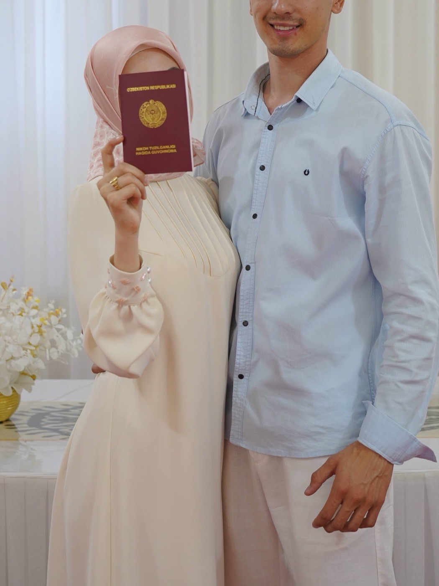

Taklifnoma

DinoravaDoston
Sizni nikoh to'yimiz munosabati bilan tashkil etilayotgan quvonchli tantanamizga lutfan taklif qilamiz.
Hayotimizdagi eng baxtli kunda samimiy tilaklaringizni eshitish biz uchun beqiyos qadrlidir.
To'y dasturxoni
18:00
21-avgust, juma
Bayramona ziyofatimizda siz bilan birga bo'lishni orzu qilamiz.
«Baxt uyi» to'yxonasi
Toshkent viloyati, Bekobod shahri
Xaritada ko'rish